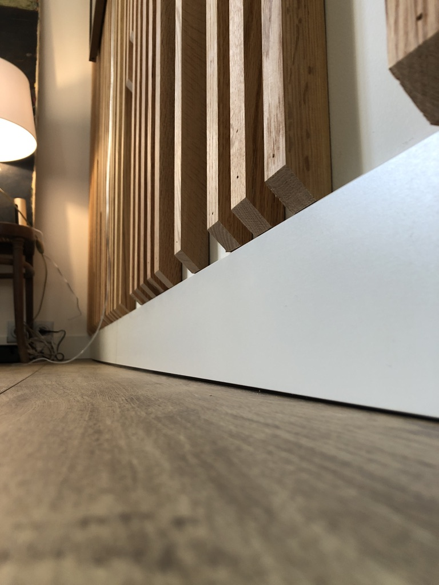
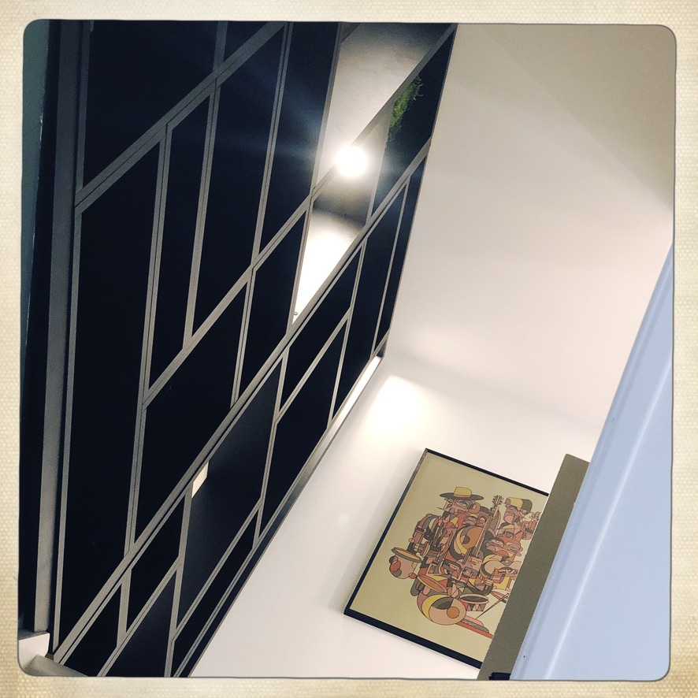
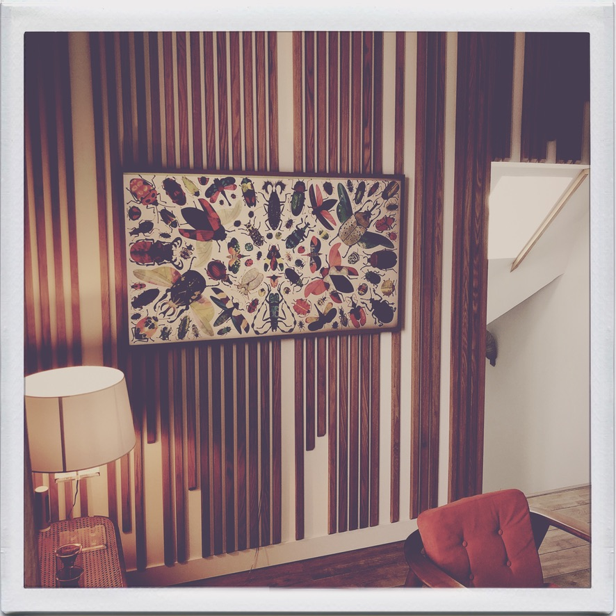
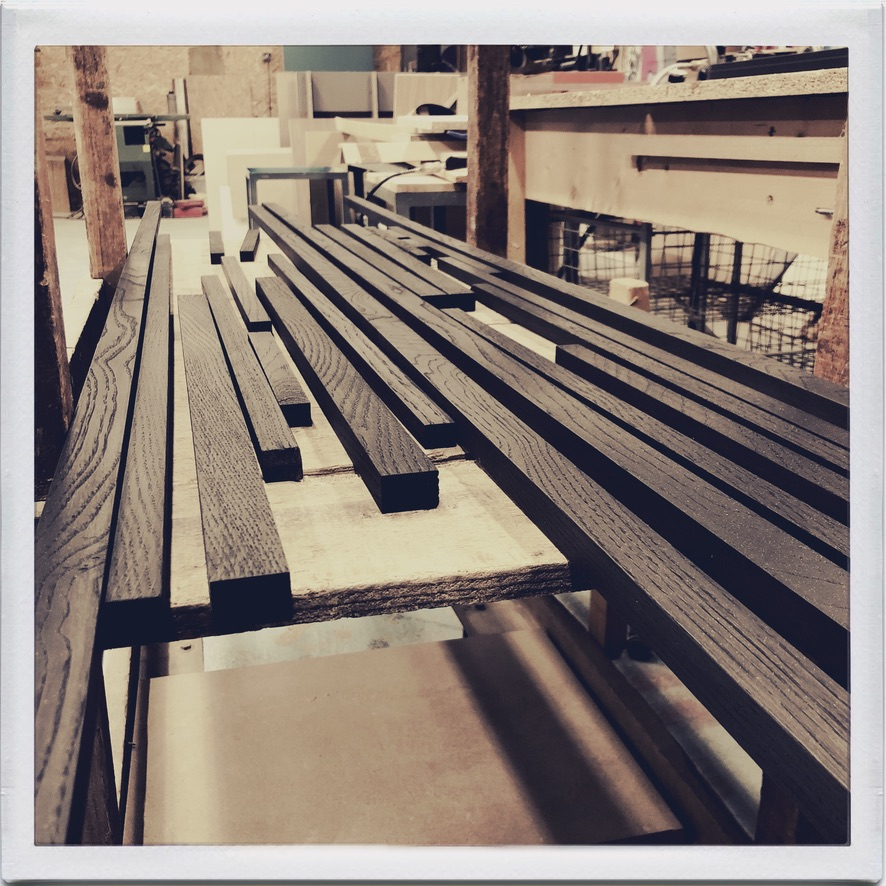
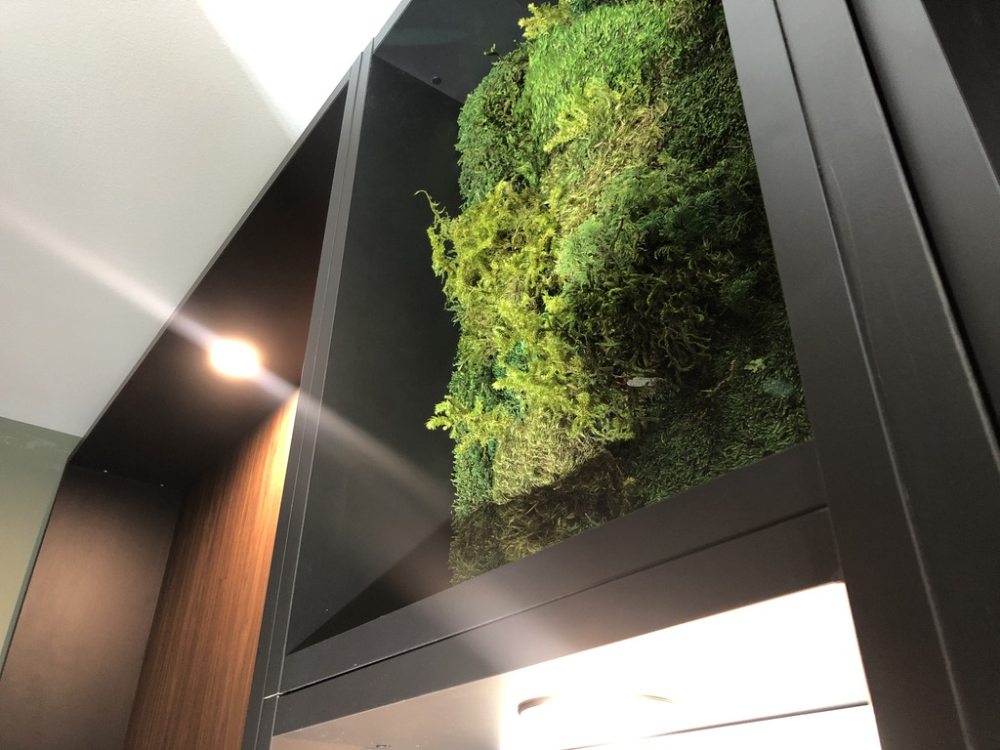
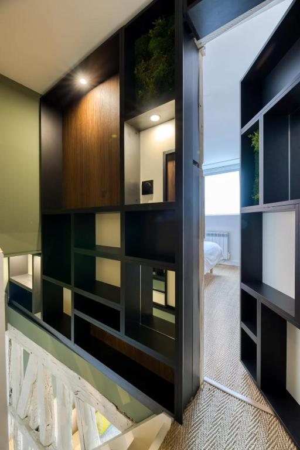
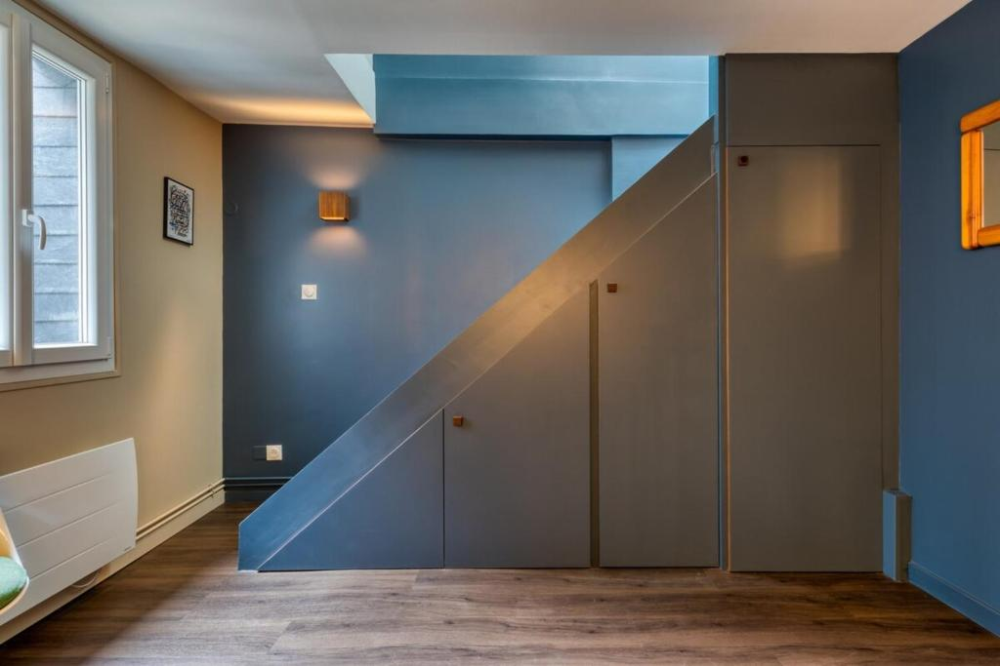
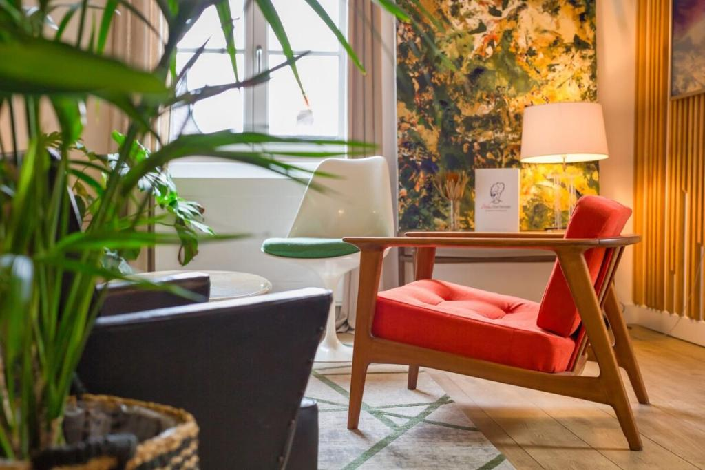

Pour ce projet d'agencement sur mesure à Rouen, le client souhaitait créer un lieu unique, à la fois fonctionnel, chaleureux et esthétique. L'intervention concernait plusieurs espaces de l'habitation : l'entrée, le salon, l'étage, la chambre, ainsi que les zones de passage.
L'objectif était d'offrir aux hôtes une véritable expérience intérieure : un lieu dans lequel on se sent immédiatement bien, presque comme chez soi, entouré d'une décoration arty, élégante et apaisante. Chaque aménagement devait participer à cette atmosphère, tout en répondant à une contrainte essentielle : optimiser au maximum les espaces disponibles.

Une bibliothèque noire sur mesure avec porte secrète
L'une des pièces maîtresses du projet est une grande bibliothèque noire réalisée en panneaux mélaminés Egger. Elle a été conçue pour s'intégrer dans un espace réduit, tout en offrant une forte présence esthétique et une vraie fonctionnalité au quotidien.
L'assemblage des caissons a été réalisé avec un système Clamex, particulièrement adapté aux espaces exigus. Cette solution permet un montage précis, propre et efficace, même lorsque les conditions de pose sont complexes.
Pour donner du rythme, de la profondeur et du caractère à l'ensemble, les fonds de cases ont été travaillés avec différentes finitions. Certaines niches reçoivent des miroirs rapportés, d'autres des fonds crème ou des fonds en placage noyer. Ces variations de matières permettent de créer un dialogue subtil entre le noir du mélaminé, la chaleur du bois, les reflets du miroir et la présence du végétal.

Plusieurs espaces accueillent des compositions végétales réalisées par Faubourg des Plantes, une entreprise spécialisée dans les murs végétaux haut de gamme. Cette collaboration s'inscrit dans une relation de travail régulière entre Atelier EGEA et Faubourg des Plantes, autour de créations sur mesure mêlant le bois et le végétal.
Ensemble, les deux ateliers imaginent des cadres, habillages et compositions sur mesure où le végétal vient dialoguer avec l'agencement, les lignes du mobilier et les matières du lieu. Dans cette bibliothèque, il apporte une respiration visuelle, une touche organique et un contraste élégant avec le noir du mélaminé, les miroirs, le placage noyer et les fonds crème.
Des spots LED en aluminium noir ont également été intégrés dans différentes niches. Ils permettent de mettre en valeur les compositions végétales, d'apporter de la profondeur aux volumes et d'accompagner visuellement le passage vers l'escalier.


Derrière cette bibliothèque se cache une seconde chambre, très agréable, avec une vue sur les toits de Rouen.
Une chambre cachée avec tête de lit en noyer
Dans cette chambre dissimulée, Atelier EGEA a conçu et réalisé une tête de lit entièrement en noyer. Ce bois noble apporte immédiatement une sensation de chaleur, de confort et d'élégance.
Une LED flexible a été intégrée à la tête de lit afin de créer un halo lumineux doux et indirect. La lumière semble sortir de la matière, dessinant une ambiance intime et apaisante. L'association du noyer et de la lumière transforme cette chambre en un espace calme, raffiné et enveloppant, parfaitement cohérent avec l'esprit général du projet.

Un salon habillé de tasseaux de chêne
Dans le salon, l'intervention s'est portée sur un habillage mural en claustra composé de tasseaux de chêne. Le rythme des lignes verticales, les hauteurs différenciées et le respect des parallèles créent une composition graphique, contemporaine et élégante.
Cet habillage mural a été pensé pour accueillir une télévision Samsung The Frame. Grâce à son effet tableau, l'écran s'intègre naturellement dans la composition et devient presque un élément décoratif à part entière. Le mur ne se contente donc pas de recevoir une télévision : il devient une pièce forte de l'aménagement intérieur.

Une entrée optimisée avec mini buanderie intégrée
Dans l'entrée, des rangements sur mesure ont été imaginés afin d'intégrer une mini buanderie tout en conservant une esthétique soignée. Les portes peintes ont été habillées de chants en noyer, accompagnées de boutons en noyer fabriqués par Atelier EGEA.
Ces boutons reprennent volontairement la même forme que l'élément permettant d'ouvrir la bibliothèque secrète. Ce détail crée un lien discret entre les différents espaces du projet et renforce la cohérence de l'ensemble. L'entrée devient ainsi un espace pratique, optimisé et élégant, sans jamais donner l'impression d'un simple rangement technique.


Des appliques en noyer conçues spécialement pour le lieu
Plusieurs appliques en noyer ont également été conçues sur mesure pour ce projet. Installées dans différents endroits de l'habitation, notamment dans les passages entre les étages, elles apportent une lumière douce et chaleureuse.
Ces appliques participent à l'identité du lieu. Elles accompagnent les déplacements, créent des ambiances lumineuses et renforcent la sensation de confort. Chaque point lumineux a été pensé comme un détail d'architecture intérieure, au service de l'atmosphère générale.

Un dressing sur mesure dans le passage d'escalier
Face à la bibliothèque, dans un espace de transition près de l'escalier, Atelier EGEA a réalisé un dressing sur mesure. L'objectif était d'optimiser un espace parfois difficile à exploiter, tout en s'intégrant harmonieusement dans le passage.
Il est fermé par deux portes coulissantes décorées d'une création géométrique inspirée d'un trait cubique. Différents placages rapportés viennent enrichir la composition, encadrée par des tasseaux de chêne teintés en noir avec une huile Rubio. Cette finition apporte de la profondeur au dessin géométrique et crée un rappel élégant avec la bibliothèque noire située en face.
Le dressing bénéficie lui aussi d'un éclairage intégré, améliorant le confort d'usage au quotidien. Le résultat est à la fois fonctionnel, graphique et parfaitement intégré à l'esprit du lieu.

Un projet entre optimisation, esthétique et ergonomie
Ce projet représente pleinement l'approche d'Atelier EGEA : optimiser les espaces, créer des aménagements fonctionnels, travailler les matières avec précision et apporter une véritable dimension esthétique à chaque détail.
De la bibliothèque secrète à la tête de lit en noyer, du dressing graphique aux appliques lumineuses, chaque élément a été pensé pour créer un intérieur cohérent, chaleureux et singulier.
La plus belle satisfaction reste toujours la même : voir le client heureux de pouvoir proposer à ses hôtes un lieu de calme, de sérénité, de charme et d'élégance.